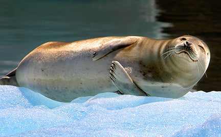

Get Involved

Though the Marine Mammal Protection Act has prevented the hunting of seals in North America, seals still face environmental threats.
Like all sea-dwelling species, seals face an uncertain future due to warming oceans, ocean acidification, increased plastic pollution
and other threats, most of them caused by humans. This includes interactions with commercial fishing operations and entanglement
with fishing gear and other debris. One of the biggest and most unpredictable threats to seals today is climate change.
Other potential threats include a reduction in food supply; human disturbance; oil spills and chemical contaminants and disease.
In addition, seals are still hunted for their fur and meat in some areas of the world, these countries being Canada and Norway.
The commercial seal hunt in Atlantic Canada is one of the largest hunts of marine mammals on Earth. Each year, tens of
thousands of baby seals, just weeks of age, are killed inhumanely for their fur. The commercial seal hunt primarily occurs far offshore
in the northwest Atlantic, an extreme environment where consistent accuracy in humanely killing seals a practical impossibility. The annual
hunt is cruel and wasteful, and targets populations already impacted by climate change, and is economically nonviable.
However, there are many people who wish to protect seals from the effects of climate change and human harm. Groups such as the
Human Society, World Wildlife Fund, the Seal Conservation Society, the Seal Protection Action Group, and Seal Defenders are all groups dedicated
to protecting and caring for seals. You don't have to be a part of these groups to help protect seals however, as small actions we do in our
every day lives can make a big impact. Here's what you can do to protect seals!
- Keep beaches clean
- Reduce, reuse, recycle.
- Keep seals wild—give them space.
- When fishing, pull your fishing line in until the seal leaves the area.
- Vaccinate your pets and keep dogs leashed at all times. Dogs have injured and even killed seals through attacks and bites, and they can disturb seals resting on the beach. They can also transmit diseases to seals.
- Promote Healthy Oceans
- Keep cats exclusively indoors. Cats that live outdoors spread the Toxoplasma gondii parasite, which is lethal to seals and other native wildlife.
- Educate others!!